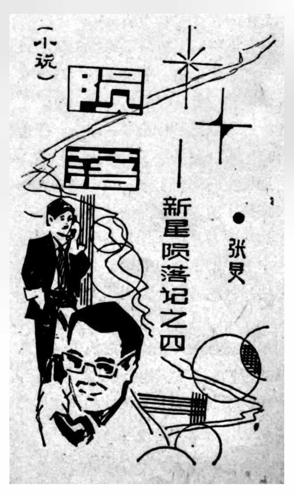

佚名 《人事》1989年第11期（总第50期），第40页
陨落（题图）
Falling (title illustration)
- Text in the drawing
- 陨落 / 新星陨落记之四
Falling / The Fall of a Rising Star, part four - Passage illustrated
尽管他在唐林已经一筹莫展，渡日如年，但是，当上峰和他谈话时他仍然感到突然……这种名为升迁——到一个深山区去当专员，但实在是“发配充军”！
Although he had run out of ideas in Tanglin and every day dragged like a year, when his superiors talked to him he was still taken by surprise… It was called a promotion — to a remote mountain prefecture as commissioner — but it was really “banishment to the frontier”!From the short story 陨落 (“Falling”), fourth in the series “The Fall of a Rising Star,” by Zhang Jiong, on the same page. 张炅《陨落》（小说，新星陨落记之四），同页
- Description
- Title illustration for the story: the title characters with a falling star trailing smoke past a man in a suit on the telephone and the face of a bespectacled official.
- Note
- In this final part of the series, the Tanglin Party secretary, removed from the city under the guise of a promotion to a remote prefecture, leaves in a limousine followed by five lorries of goods, and realizes the firecrackers set off as he goes are to see off a plague god.
- Artist
- Unattributed 佚名
- Published in
- 《人事》1989年第11期（总第50期）, p. 40
- Themes
- Privilege · Story illustrations

Cite
Unattributed, “陨落（题图）” [Falling (title illustration)], Renshi (Personnel) 《人事》, 1989, no. 11, p. 40.